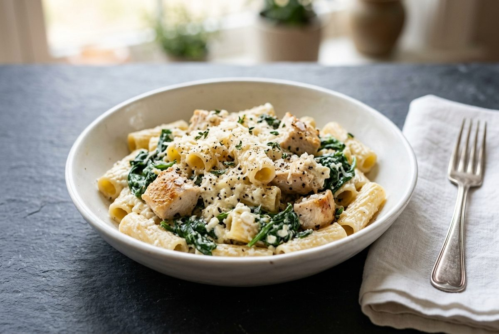
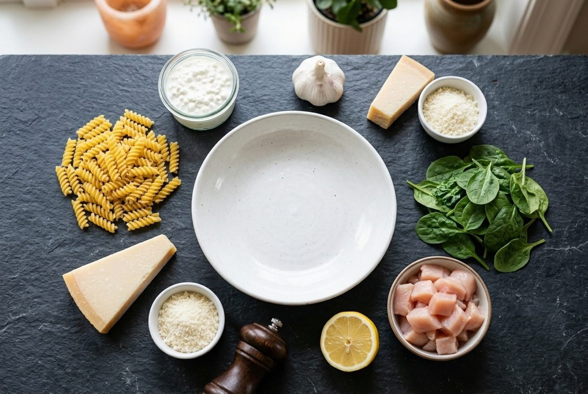
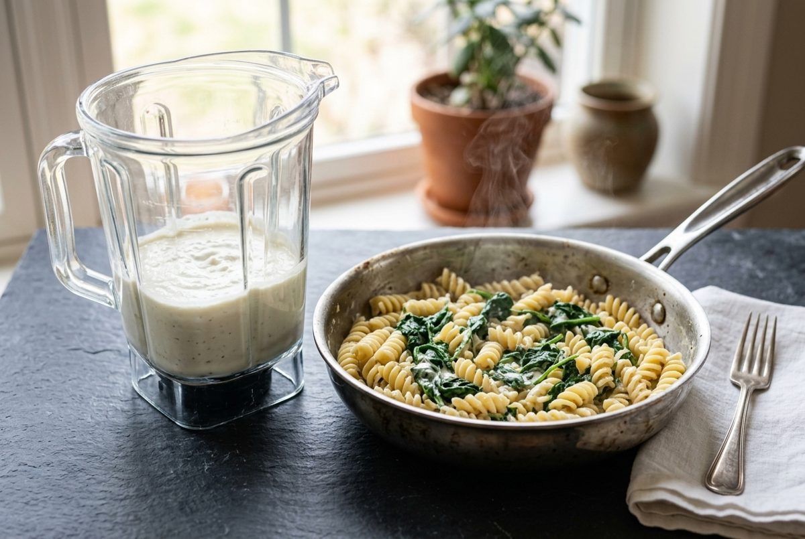
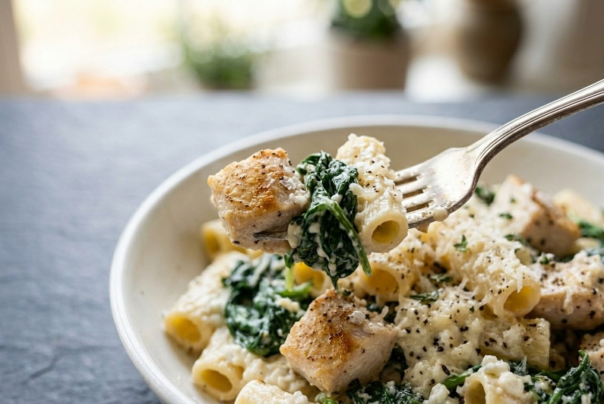
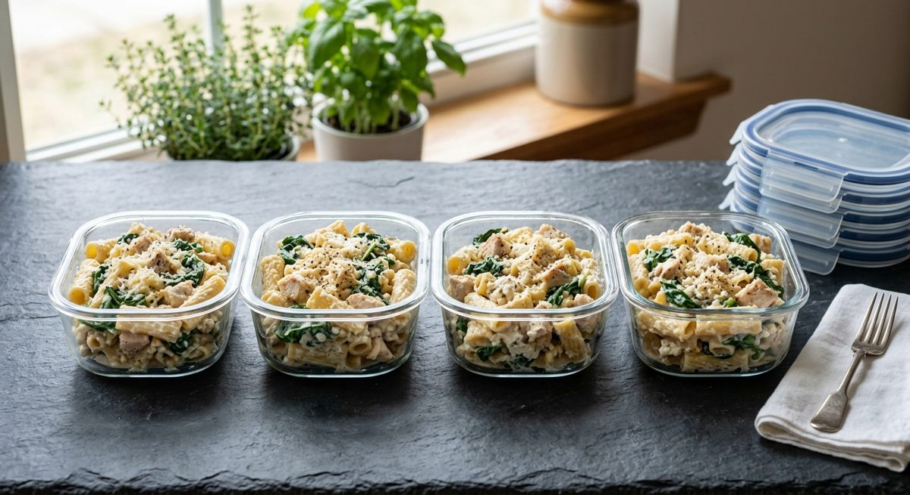

High-Protein Cottage Cheese Pasta with Chicken and Spinach (Creamy, 30 Minutes)
Per serving (about 400g). Nutrition is an estimate and varies with brands.

Blend cottage cheese and it turns into a smooth, creamy pasta sauce with far less fat than cream. That is why cottage cheese pasta is one of the most popular high-protein recipes online right now.
This version adds seared chicken and wilted spinach. Each serving has 48g protein and 495 calories, which makes it an easy 40g protein meal that still feels like comfort food.
The trick is to blend the sauce until it is completely smooth, and to keep the heat low once it goes into the pan.
Ingredients

- 8 oz (225g) dry short pasta, such as rotini, fusilli or rigatoni
- 1 lb (450g) boneless skinless chicken breast, cut into bite-sized pieces
- 1 tbsp (15ml) olive oil
- 1.5 cups (340g) low-fat cottage cheese
- 1/2 cup (50g) grated parmesan, divided
- 4 cloves garlic
- 1/2 lemon, juiced (about 1 tbsp / 15ml)
- 5 oz (140g) baby spinach
- 1/2 tsp salt, plus more for the pasta water
- 1/2 tsp black pepper
Instructions
- Season the chicken with the salt and pepper. Heat the olive oil in a large skillet over medium-high heat. Cook the chicken for 6 to 7 minutes until golden and 165°F (74°C) inside. Move it to a plate.
- Boil the pasta in salted water until al dente. Scoop out 1/2 cup (120ml) of the pasta water, then drain.
- Blend the cottage cheese, 1/4 cup (25g) of the parmesan, the garlic, lemon juice and 1/4 cup (60ml) of the pasta water until completely smooth, about 45 seconds.
- Put the same skillet over low heat. Add the spinach and cook for 1 minute until wilted. Add the pasta, chicken and blended sauce.

- Stir for 2 minutes until creamy and warm. Add pasta water a tablespoon at a time if the sauce is too thick. Do not let it boil hard.
- Top with the remaining parmesan and black pepper. Divide across 4 containers.

Meal Prep, Storage and Reheating

- Fridge: keeps for 4 days in airtight containers.
- Reheat: microwave for 2 minutes with a splash of milk or water. The sauce thickens in the fridge, and the liquid loosens it again.
- Freezer: not recommended. The cottage cheese sauce can turn grainy after freezing.
- Pasta: cook it just to al dente, because it softens a little when reheated.
Quick Questions
Which cottage cheese works best? Low-fat (2%) gives a good balance of creaminess and protein. Full-fat is richer, and fat-free is a little less creamy.
Can I make it vegetarian? Yes. Skip the chicken and add 1 can (15 oz / 425g) of chickpeas. The protein drops to about 30g per serving.
Why is my sauce grainy? The cottage cheese was not blended long enough, or the pan was too hot. Blend it longer and keep the heat low.